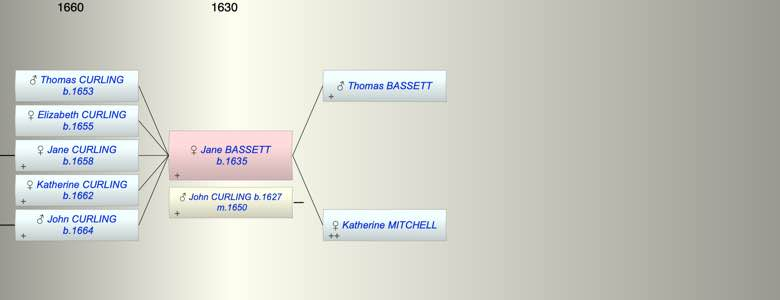

| [Index] |
| Jane BASSETT (1635 - ) |
|  |
| b. 1635 at St Laurence |
| m. 18 Feb 1650 John CURLING (1627 - ) |
| Parents: |
| Thomas BASSETT |
| Katherine MITCHELL |
| Children (5): |
| Thomas CURLING (1653 - ) |
| Elizabeth CURLING (1655 - ) |
| Jane CURLING (1658 - ) |
| Katherine CURLING (1662 - ) |
| John CURLING (1664 - ) |
| Events in Jane BASSETT (1635 - )'s life | |||||
| Date | Age | Event | Place | Notes | Src |
| 1635 | Jane BASSETT was born | St Laurence | Note 1 | ||
| 18 Feb 1650 | 15 | Married John CURLING (aged 23) | date of Undenture | ||
| 1653 | 18 | Birth of son Thomas CURLING | St Laurence | Note 2 | |
| 1655 | 20 | Birth of daughter Elizabeth CURLING | St Laurence | Note 3 | |
| 1658 | 23 | Birth of daughter Jane CURLING | St Laurence | Note 4 | |
| 1662 | 27 | Birth of daughter Katherine CURLING | St Laurence | Note 5 | |
| 1664 | 29 | Birth of son John CURLING | St Laurence | Note 6 | |
| Created on a Mac™ using iFamily for Mac™ on 8 Oct 2023 |